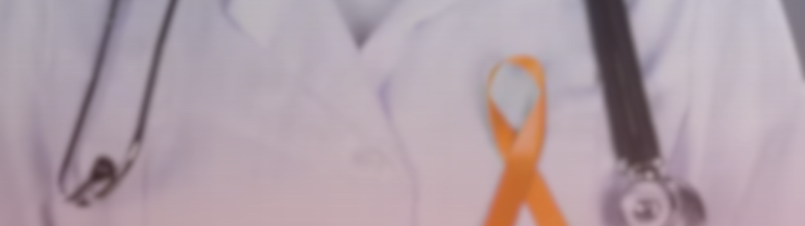

<div class="relative car">
    <div id="default-carousel" class="relative" data-carousel="static">
        <!-- Carousel wrapper -->
        <div class="imghd relative h-56 overflow-hidden md:h-96" data-carousel="slide">
            <div class="hidden duration-700 ease-in-out" data-carousel-item>
                
            </div>
            <div class="hidden duration-700 ease-in-out" data-carousel-item>
                
            </div>
            <div class="hidden duration-700 ease-in-out" data-carousel-item>
                
            </div>
            <button type="button"
                class="absolute top-0 left-0 z-30 flex items-center justify-center h-full px-4 cursor-pointer group focus:outline-none"
                data-carousel-prev>
                <span
                    class="inline-flex items-center justify-center w-10 h-10 rounded-full bg-white/30 dark:bg-gray-800/30 group-hover:bg-white/50 dark:group-hover:bg-gray-800/60 group-focus:ring-4 group-focus:ring-white dark:group-focus:ring-gray-800/70 group-focus:outline-none">
                    <svg aria-hidden="true" class="w-6 h-6 text-white dark:text-gray-800" fill="none"
                        stroke="currentColor" viewBox="0 0 24 24" xmlns="http://www.w3.org/2000/svg">
                        <path stroke-linecap="round" stroke-linejoin="round" stroke-width="2" d="M15 19l-7-7 7-7">
                        </path>
                    </svg>
                    <span class="sr-only">Previous</span>
                </span>
            </button>
            <button type="button"
                class="absolute top-0 right-0 z-30 flex items-center justify-center h-full px-4 cursor-pointer group focus:outline-none"
                data-carousel-next>
                <span
                    class="inline-flex items-center justify-center w-10 h-10 rounded-full bg-white/30 dark:bg-gray-800/30 group-hover:bg-white/50 dark:group-hover:bg-gray-800/60 group-focus:ring-4 group-focus:ring-white dark:group-focus:ring-gray-800/70 group-focus:outline-none">
                    <svg aria-hidden="true" class="w-6 h-6 text-white dark:text-gray-800" fill="none"
                        stroke="currentColor" viewBox="0 0 24 24" xmlns="http://www.w3.org/2000/svg">
                        <path stroke-linecap="round" stroke-linejoin="round" stroke-width="2" d="M9 5l7 7-7 7"></path>
                    </svg>
                    <span class="sr-only">Next</span>
                </span>
            </button>
        </div>
        <div class="absolute front top-1/2 left-1/2 -translate-x-1/2 -translate-y-1/2">
            <div class="flex flex-col items-center">
                <div class="headC waviy text-center text-white translate-y-5">
                    <model-viewer src="../../assets/models/ribbon.glb" alt="A 3D model of a car" shadow-intensity="1"
                        auto-rotate ar disable-pan></model-viewer>
                    <p>Awareness Makes a Cure</p>
                    <p>Possible</p>
                </div>
                <a routerLink="../home" fragment="latestcollection">
                    <button style="background-color: #ff7c24;"
                        class="translate-y-1 shadow-2xl w-full p-2 mt-4 text-gray-100">GET
                        STARTED</button></a>
            </div>
        </div>
    </div>